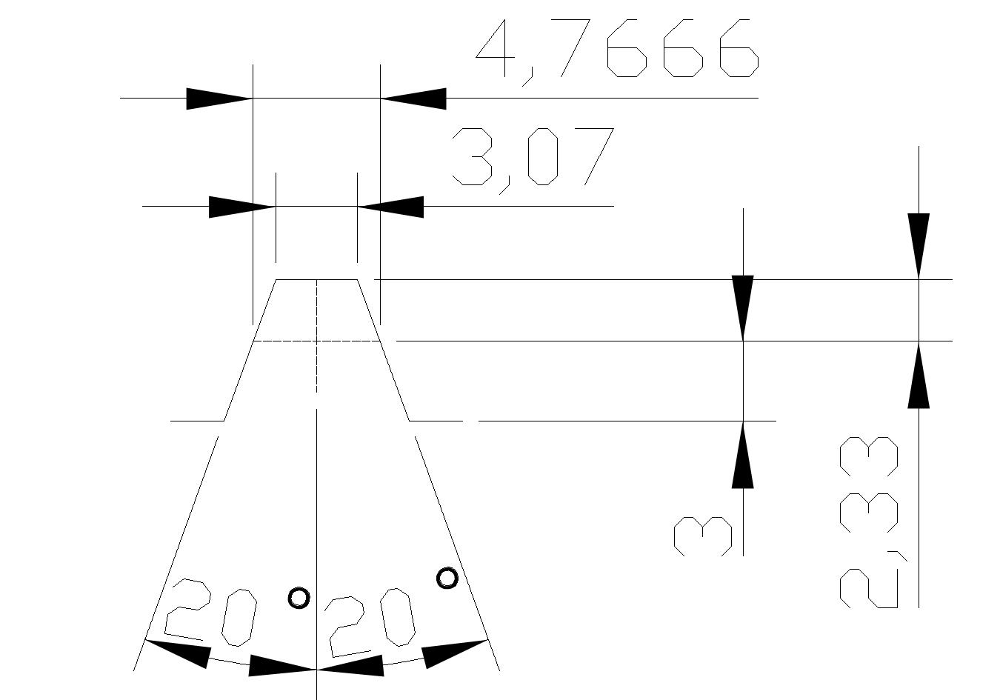

梯形
本工具用于定义一个梯形（Trapezoidal）齿廓的几何尺寸，并依据这些参数生成一个DXF（Drawing Exchange Format）格式的图形文件。

1. 中径宽 (Pitch Width)
- 定义: 指在齿高中点（即中径线）位置测量的单个轮齿的宽度。
- 单位: 毫米 (mm)。
- 解释: 这是决定齿厚的基本参数。它与齿槽的宽度共同构成了齿距。
- 示例值:
4.7666
2. 中径齿顶高 (Pitch Addendum)
- 定义: 从中径线到齿顶（轮齿最高点）的径向距离。
- 单位: 毫米 (mm)。
- 解释: 该参数定义了轮齿超出中径线的高度部分。它与下面的“中径齿底高”共同决定了总齿高。
- 示例值:
2.33
3. 中径齿底高 (Pitch Dedendum)
- 定义: 从中径线到齿根（轮齿最底部）的径向距离。
- 单位: 毫米 (mm)。
- 解释: 该参数定义了轮齿低于中径线的高度部分。通常，齿底高会略大于齿顶高，为配对齿轮的齿顶留出间隙。
- 示例值:
3.0
4. 齿型右半角 (Tooth Profile Right Half Angle)
- 定义: 梯形齿廓右侧齿壁与齿高中垂线之间的夹角。
- 单位: 度 (°)。
- 解释: 这个角度定义了齿壁的倾斜程度。对于标准的对称梯形齿，左右半角是相等的。这个角度与压力角相关。
- 示例值:
20.0
5. 齿型左半角 (Tooth Profile Left Half Angle)
- 定义: 梯形齿廓左侧齿壁与齿高中垂线之间的夹角。
- 单位: 度 (°)。
- 解释: 定义了左侧齿壁的倾斜程度。如果需要一个非对称的齿型，可以将此角度设置为与右半角不同的值。
- 示例值:
20.0
注意: 两个角度值右侧的绿色输入框是用于输入公差或补偿值。
6. 保存文件 (Save File)
- 定义: 指定生成的DXF文件的完整保存路径和文件名。
- 解释: 点击“选择文件”按钮可以浏览并选择一个保存位置。软件将把根据上述参数绘制的梯形齿廓图形保存为
.dxf文件。
生成齿形文件 (Generate Profile File)
- 操作: 这是一个执行按钮。
- 解释: 在设置好所有几何参数并指定了保存路径后，点击此按钮，软件将执行计算并生成DXF文件。